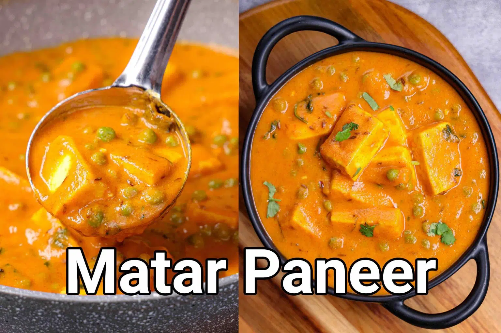

Matar paneer curry
Matar Paneer Recipe | Mutter Paneer | Dhaba Style Matar Paneer ki Sabji

Description
One of the most popular and perhaps one of the simple and tasty North Indian paneer gravy-based curry recipes. Basically, it is prepared with the combination of paneer and green peas as its hero ingredient in a tomato and onion gravy base. It is typically served with a wide range of Indian flatbread recipes like naan, roti, and poori, but can also be served with any type of rice variants too.
Some tips and suggestions for a perfectly flavored matar paneer recipe. Firstly, the paneer has to be moist, juicy, and tender for this recipe for a perfect dhaba-style curry. I have used homemade paneer which is fresh and perfect for this recipe. If you are in a rush try to get fresh paneer from your local grocery store. Ensure to buy soft and moist paneer as some paneer may be hard due to adulteration. Secondly, I have used frozen green peas as I do not have access to fresh peas. If you have access to it, you should be using it instead of the frozen option. Lastly, I have not added fresh cream on top of the prepared gravy recipe. Adding cream would certainly make it tasty, but would reduce the spice level. Perhaps, it is better to increase the chili powder and garam masala and then add the cream for a better taste.
Ingredients
for onion tomato gravy base:
- 2 tbsp oil
- 2 onion, sliced
- 4 clove garlic, crushed
- 2 inch ginger
- 4 tomato, sliced
- 2 tbsp cashew
for curry:
- 2 tbsp oil
- 1 tsp ghee
- 1 tsp cumin
- ½ inch cinnamon
- 3 pods cardamom
- 2 chilli, sliced
- ½ tsp turmeric
- 1 tsp chilli powder
- ½ tsp coriander powder
- ½ tsp cumin powder
- ½ tsp garam masala
- 3 cup water
- 1 tsp salt
- 1½ cup peas
- 200 grams paneer, cubed
- 2 tbsp cream
- 1 tsp kasuri methi, crushed
- 2 tbsp coriander, chopped
Steps
- Firstly, in a pan heat 2 tbsp oil. add 2 onion, 4 cloves garlic, and 2 inch ginger.
- Saute until the onions turn golden brown.
- Add 4 tomatoes, 2 tbsp cashew, and saute until the tomato turn soft and mushy.
- Cool completely, and transfer to a mixer jar.
- Grind to smooth paste without adding water.
- To prepare curry, heat 2 tbsp oil. add 1 tsp ghee, 1 tsp cumin, ½ inch cinnamon, 3 pods cardamom and 2 chilli. saute until the spices turn aromatic.
- Keeping the flame on low, add ½ tsp turmeric, 1 tsp chilli powder, ½ tsp coriander powder, ½ tsp cumin powder, and ½ tsp garam masala.
- Saute until the spices turn aromatic.
- Now add prepared gravy and cook well.
- Keep cooking until the oil separates from the gravy base.
- Further, add 3 cup water and 1 tsp salt.
- Mix well adjusting the consistency of gravy.
- Further, add 1½ cup peas and 200 grams paneer. mix well.
- Cover and cook for 5 minutes or until the peas are cooked well.
- Add 2 tbsp cream, 1 tsp kasuri methi, and 2 tbsp coriander.
- Finally, enjoy matar paneer with roti or rice.